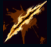
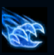
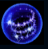
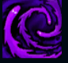
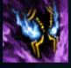

Nocturne
| Nocturne The Eternal Nightmare | |
|---|---|
| Release date | 15.03.2011 |
| Class | Assassin |
| Positions | Jungle, Top, Middle |
| Resource | Mana |
| Range type | Melee |
| Adaptive type | Physical |
| Base statistics | |||
| Health | 585 – 2030 | Mana | 275 – 870 |
| Health regen. | 7 – 19.75 |
Mana regen. | 7 – 14.65 |
| Armor | 38 – 97.5 | Attack damage | 62 – 114.7 |
| Magic resist. | 32 – 44.75 | Crit. damage | 175% |
| Move. speed | 345 | Attack range | 125 |
Un amalgam demonic desprins din coșmarurile tuturor creaturilor înzestrate cu conștiință, creatura numită Nocturne a devenit o forță primordială a răului suprem. Aspectul său este haotic și lichid: o umbră fără chip, cu ochii reci, înarmată cu tăișuri înspăimântătoare. După ce s-a eliberat din tărâmul spiritelor, Nocturne s-a năpustit asupra lumii reale pentru a se hrăni cu teroarea provocată de întunericul absolut. |  |
TĂIȘURI DE COȘMAR La fiecare câteva secunde, următorul atac îl va vindeca pe Nocturne și le va provoca inamicilor din jur daune fizice bonus. Atacurile de bază ale lui Nocturne reduc timpul de reactivare al abilității. |
||
|---|---|---|---|---|
 |
AMURG MACABRU Nocturne aruncă un tăiș întunecat care provoacă daune, lăsând în urmă o ''Dâră tenebroasă'' și făcând campionii să lase și ei o ''Dâră tenebroasă''. Cât timp plutește deasupra dârei, Nocturne se poate deplasa prin unități și are viteza de mișcare și daunele din atac mărite. |
|||
 |
VĂL DE ÎNTUNERIC Nocturne își îmbunătățește tăișurile, primind în mod pasiv viteză de atac. Activarea ''Vălului de întuneric'' îi permite lui Nocturne să se piardă în umbre, creând o barieră magică ce blochează abilitatea unui inamic. Dacă reușește să blocheze o abilitate, își dublează viteza de atac pasivă. |
|||
|  |
GROAZĂ DE NEDESCRIS
Nocturne sădește un coșmar în mintea țintei, provocându-i daune în fiecare secundă și înspăimântând-o dacă nu iese din raza de acțiune înainte să expire durata. |
|||
 |
PARANOIA Nocturne reduce vizibilitatea tuturor campionilor inamici și îi face să nu-și mai vadă aliații. Apoi, se poate repezi la unui campion inamic din apropiere. |